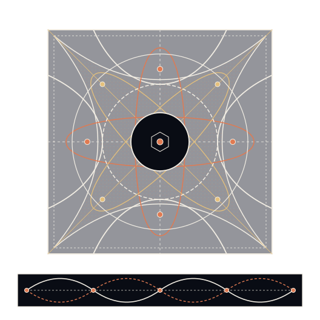
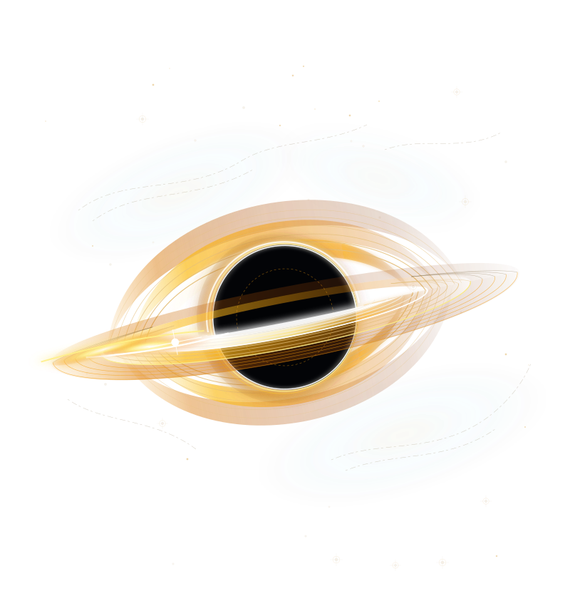
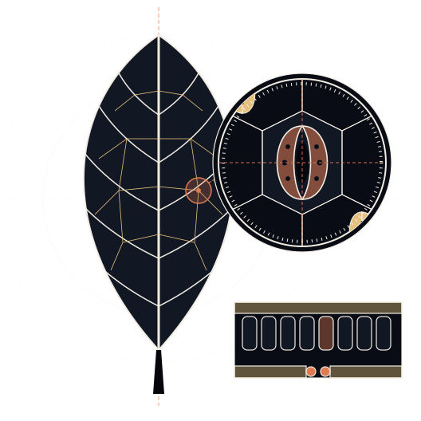

Grind Hub
Welcome back · Today
Consistency
Today’s Progress
0.0%0 / 30
problems solved todayPhysics
0/ 10Chemistry
0/ 10Maths
0/ 10Retention Health
Chapter Progress
Physics Matrix
Pick Your Arena

Physics
Chemistry
Maths
Chapters
All Questions
Config Panel
Cloud Storage
Link Google Drive to go unlimited. Data syncs to 'JEEMaxxing_Cloud'. No more storage caps.
Data Vault

One-file backup of EVERYTHING — question bank, images, ELO, mocks, solve history, checkpoint lockdown and settings. Every section is fingerprinted, and restore verifies each one. Do this regularly; cloud sync is not a backup.
Your Build

Daily Directive
Gemini API Setup
Audio & Visual FX
Tune the dopamine. Sound, motion and haptics are fully modular. Turning off Visual FX also calms the UI for photosensitivity / low‑power (it mirrors your OS reduced‑motion setting on first load).
Anti-Slump Checkpoints
4-pillar accountability engine: scheduled checkpoints, goof-off detection, grace-period ignition, and Protocol Zero graph scarring. The whole system lives in the floating 🔒 Sentry Hub at the bottom-left corner — arm it, set times, and test-fire from there.